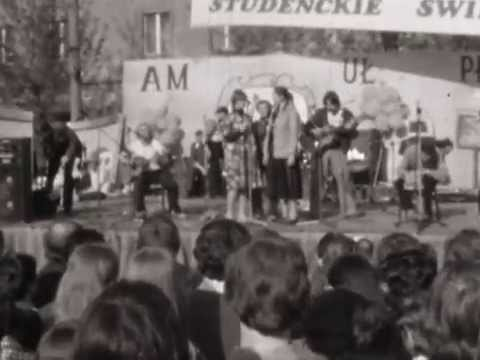
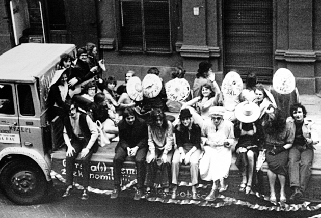
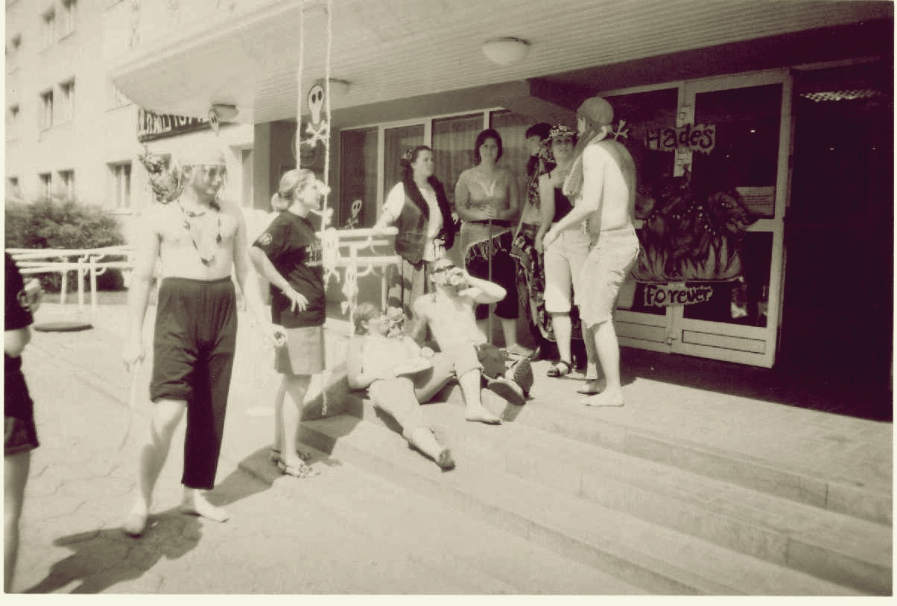
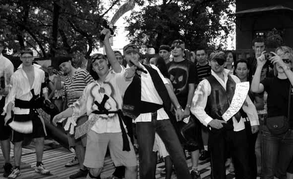

Czym są juwenalia??
Autorem nazwy studenckiego święta jest prof. Florian Nieuważny.
Powstała ona w 1954 roku, jako alternatywa do proponowanej nazwy: „Saturnalia”
(rzymskie święto z tradycją kilkudniowej uczty, w której uczestniczyli również niewolnicy).
Nazwie „Saturnalia” brakowało jednak elementu młodości, stąd propozycja prof.
Floriana Nieuważnego, aby studenckie święto nazywało się „Juwenalia” (od łac. iuvenis – młodzieniec).

Juwenalia Łódź. 1980 r.
Historia juwenaliów w Łodzi.

Maj 1973 roku. Studenci Uniwersytetu Łódzkiego podczas parady na uczelnianym starze na ulicy Piotrkowskiej.
Podczas przekazania władzy łódzkim studentom przed ławeczką Tuwima, prof. Paweł Górski, rektor Uniwersytetu Medycznego, pozwolił sobie na krótką anegdotę.
- Za moich czasów również były barwne pochody studentów. Tak się złożyło, że przemarsz Piotrkowską otwierał wydział farmacji.
Jego studenci od dwudziestu lat czekali na ukończenie nowego gmachu swojej uczelnianej jednostki.
"Pozdrawiamy robotników budujących w trudzie wydział farmacji", głosił napis przytwierdzony do trumny, którą nieśli w pochodzie studenci - wspominał rektor Górski.
I pytał, czy ta sytuacja nie przypomina o budowie bardziej współczesnego budynku pod pieczą Uniwersytetu Medycznego.
Pewnie chodziło o Centrum Kliniczno Dydaktyczne przy ul. Czechosłowackiej...
- Pochód z trumną musiał iść ze czterdzieści lat temu, bo sam zacząłem studia w 1967 r. - opowiada prof. Górski. - Wokół było sporo milicjantów.
Imprezy studenckie koncentrowały się w akademikach i kończyły nad ranem. Potem dwie godziny snu i znowu zabawa.
Pulsowały studencką energią kluby przy Piotrkowskiej, np. "Siódemki". Oczywiście, tam muzyka grała na żywo.
Pamiętam, że za czasów moich studiów specjalnie na juwenalia przyjechał z recitalem Wojciech Młynarski.
Za to masowych imprez plenerowych, gdzie bawili się także ludzie nie związani z uczelniami nie było.
Według Karola Pawlaka, który studia na Politechnice Łódzkiej, rozpoczął w 1989 r. "masówki" zdominowały juwenalia dopiero za jego czasów na uczelni.

- Jeden z pierwszych koncertów na powietrzu przy campusie politechniki to występ samotnego Kuby Sienkiewicza w 1992 r.
Lider Elektrycznych Gitar przyjechał wtedy do Łodzi bez swojego zespołu, tylko z akustyczną gitarą, ale kilka tysięcy ludzi śpiewało z nim "Jestem z miasta" - wspomina Pawlak.
Krzysztof Skiba, wokalista Big Cyca, przesuwa granicę pierwszych koncertów w plenerze na połowę lat osiemdziesiątych.
- W 1985 r. odbyły się chyba najbardziej wyczekiwane juwenalia w historii Łodzi. Władze zezwoliły na pierwszą wielką studencką imprezę od czasów wprowadzenia stanu wojennego.
Na Lumumbowie wielki koncert zagrał m.in. punkrockowy zespół "Moskwa" - wspomina Skiba. Jeszcze lepiej niż koncert muzyk zapamiętał konkurs dekoracji akademików.
- W maju odbywały się studenckie potańcówki w obecnej Sali Senatu Uniwersytetu Łódzkiego przy ul. Narutowicza.
Najpierw ktoś deklamował wiersze, śpiewał, a potem studenci ruszali do tańca - mówi prof. Krysiński.

Były rektor ukończył studia w 1957 r. Rok później pochód Pietryną wyruszył. Szli w nim pierwsi studenci z Afryki w rytmie ludowych przyśpiewek.
Kroczył także yeti-przebieraniec. Wiemy to na sto procent - z filmu dokumentalnego "Juwenalia w Łodzi".
Dokument nakręcił Andrzej Kondratiuk, młody student filmówki.
Czterominutowe "Juwenalia w Łodzi" - perełkę ze zbiorów szkoły z Targowej, będzie można zobaczyć w ramach imprezy "zŁODZIejskie projekcje".
Z dawnych pochodów, oprócz filmu Kondratiuka, zostało kilkanaście fotografii, które można znaleźć w archiwum Uniwersytetu Łódzkiego. W teczce podpisanej "1978/79" zobaczymy,
jak studentka idąca w pochodzie podnosi ręce do trybuny z dostojnikami i wręcza kwiat władzom miasta.
I nie jest to pierwszy maja. Ale znajdziemy też zdjęcia młodych mężczyzn w samych biustonoszach i barchanowych majtkach,
inni paradują w lisach na szyi. W archiwumUŁ można podziwiać również fotograficzną relację z juwenaliowego koncertu w Balbinie.
Kilku brodatych studentów w grubych okularach najwidoczniej śpiewa piosenkę o nabiale, bo nad sceną góruje napis "Dziś tylko krowy nie piją mleka, więc się zastanów, bo czas ucieka".
Przypomnijmy, że hasło obecnych juwenaliów to "W łódzkie juwenalia niech się przyśni kraina sake i kwitnącej wiśni".
Nie wiadomo, czy japoński trunek będzie do skosztowania w czasie dzisiejszego pochodu, ale i tak jest lepiej niż kiedyś.
- Bo w późnych latach siedemdziesiątych na juwenaliach mogliśmy pić tylko jeden gatunek piwa - "Łódzkie jasne" - mówi Zbigniew Skowroński, absolwent politechniki i obecny dyrektor WORD w Łodzi.